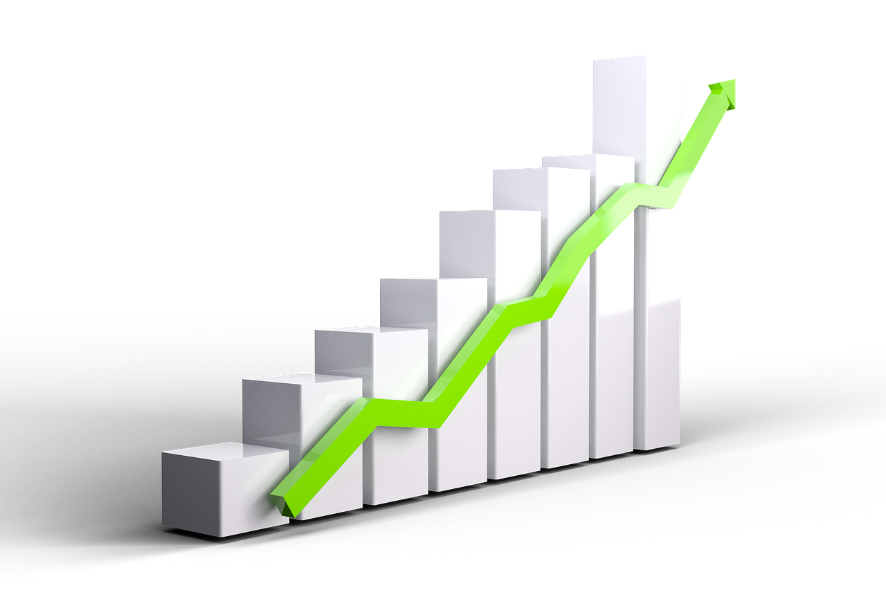
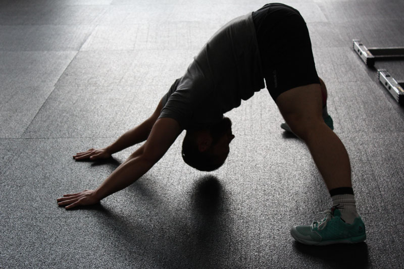
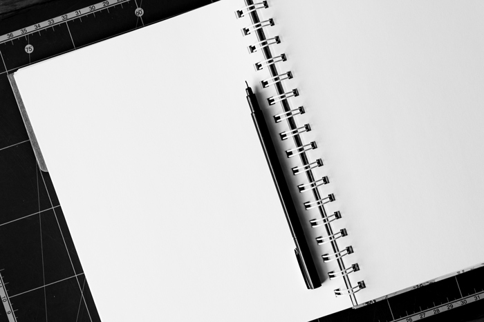

Het is de grootste angst voor iedere sporter: geblesseerd raken. Hoe voorzichtig je ook traint, een blessure ligt
snel om de loer . Daarom geven we eerst enkele aanwijzingen om de kans op blessureleed wat te verkleinen, want
voorkomen is beter dan genezen.
Bouw je training geleidelijk op
Start je net met sporten? Dan is het belangrijk dat je je training geleidelijk opbouwt. je lichaam moet wennen
aan de belasting en heeft hiervoor de tijd nodig. Gedurende de tijd zal je lichaam sterker worden en meer
belasting aankunnen. Ben je een beginnend sporter of ga je weer starten na een blessure? Raadpleeg dan zeker
één van onze coaches voor de optimale begeleiding!

Doe een warming up voor je training
Doe jij een warming up voordat je begint met sporten? Dit is altijd een goed idee! Koude spieren zijn namelijk een
stuk gevoeliger voor blessures dan opgewarmde spieren. Daarnaast zorgt een warmining up ervoor dat je
bloedcirculatie toeneemt, waardoor spieren sneller van zuurstof en energie kunnen worden voorzien zodat je direct
beter kunt presteren. Bedenk van tevoren welke delen van het lichaam je het meest gaat belasten met je training en
focus je hier ook op bij je warming up.
Rekken of stretchen?
Rekken of stretchen is niet hetzelfde als een warming up. Het is dan ook niet verstandig om dit te doen als je
spieren nog koud en dus kort zijn. Het beste tijdstip om te rekken is na de training, als je spieren nog warm en
verlengd zijn. Om blessures te voorkomen is het belangrijk dat rekken een deel van je dagelijkse routine wordt.

Controleer je techniek
Het toepassen van de verkeerde techniek is een bekende veroorzaker van blessures. Voorbeelden van verkeerde techniek
bij fitnessen zijn het niet rechthouden van de rug of niet de juiste spiergroep gebruiken voor die specifieke
oefening. Dit zorgt voor een verkeerde belasting van je lichaam en kan op den duur zorgen voor overbelasting. Laat
je techniek bijvoorbeeld checken door één van de begeleiders in onze gym.
Moe of ziek geweest? Pas je trainingsschema aan!
Zit je niet zo lekker in je vel of heb je net een griepje gehad? Dan heeft dit directe invloed op je sportieve
prestaties. Misschien voel je tijdens je training al dat het wat minder gaat, maar onderschat dit signaal zeker
niet. Je lichaam geeft hiermee aan dat het (nog) niet in topconditie is en op dat moment niet kan presteren
zoals voorheen. Om blessures te voorkomen is het verstandig om je training hierop aan te passen. Kort je
trainingssessie bijvoorbeeld wat in of verlaag het gewicht. Zodra je je weer beter voelt kun je verder trainen
op je oude niveau.

Voor altijd blessure-vrij?
Helaas kun je nooit 100% voorkomen dat je een blessure zult oplopen. Zeker bij acute blessures is het vaak een
kwestie van dikke pech. Met bovenstaande tips wordt de kans op een blessure in ieder geval een stuk kleiner.
Veel voorkomende schouderblessures
Rotatorcuff klachten
Rotatorcuff kalchten zijn klachten van de spieren rondom de schouder. De rotatorcuff zijn vier spieren die om de schouder
liggen
Supraspinatus
Subscapularis
Infraspinatus
Teres minor
Klachten hieraan komen meestal door overbelasting. Maar ook door bv een val op de schouder kunnen deze spieren beschadigd
raken. De meest voorkomende klachten hiervan zijn:
Pijn in de schouder, ook 's nachts. Vaak is het niet mogelijk om op de schouder te liggen.
Bewegingen van de hand boven schouderhoogte is pijnlijk of niet mogelijk.
Pijn zit vaak in de schouder en bovenarm.
Als sporter is het belangrijk om deze klachten niet te negeren. Je hoeft niet direct bij elk pijntje naar een
fysiotherapeut. Maar als de klachten langer aanwezig zijn is dit ten strengste aan te raden. Ook als de klachten steeds
vaker terugkomen.
Schouderinstabiliteit
Schouderinstabiliteit is het gevoel dat de schouder niet stabiel is. Je schouder voelt niet lekker of je hebt zelfs het
gevoel dat hij uit de kom wil schieten. Deze klachten kunnen komen door herhaaldelijk boven schouderhoogte bewegen.
Schouderinstabiliteit kan ook acuut ontstaan door een val of klap. De instabiliteit ontstaat dan wanneer de schoduer uit de
kom schiet (schouderluxatie) of gedeeltelijk uit de kom schiet (subluxatie). De meest voorkomende klachten van
schouderinstabiliteit zijn:
Gevoel van instabiliteit
Moe of zwaar gevoel na sporten
Gevoel dat de schouder uit de kom wil schieten
Wederom is het advies om met deze klachten een fysiotherapeut te bezoeken. Bij een schouderluxatie is het advies om eerst
langs de huisarts te gaan.
Veel voorkomende polsblessures
Polsverzwikking
Bij een polsverzwikking zijn je polsbanden te ver opgerekt doordat je bijvoorbeeld gevallen of gebotst bent. Soms met een
kraakbeenbeschadiging. Door het beschadigde weefsel ontstaat vaak een zwelling (van vocht en bloed). Hierdoor is er druk in
de pols, en dat doet pijn.
Overbelasting van de pols
Een overbelastingsblessure van je pols is een chronische irritatie van bindweefsel, banden, pezen en spieren rondom het
polsgewricht. Meestal doet het pijn aan de binnenkant van je pols. Deze blessure ontstaat doordat de belasting hoger is dan
je kunt hebben. Deze te hoge belasting kan ontstaan door:
Te moeilijke of te zware oefeningen.
Veel herhalingen van slaan of pushen
Overstrekking van de pols bij steun op de handen.
Verkeerde plaatsing van je handen
Behandeling
In de meeste gevallen is het voldoende om een gedurende tijd tot je klachten beter zijn je trainingsschema aan te passen.
Verminder de belasting die op de pols komt en vermijdt herhalingen.
Blijven deze klachten aanhouden dan raden wij u aan om langs te gaan bij onze fysiotherapeuten of bij je huisarts.
Veel voorkomende rugblessures
Rugpijn wordt door vele aandoeningen veroorzaakt. Lage rugpijn komt bij veel sporters voor en bestaat meestal uit steken en
stijfheid laag in de rug. Overbelasting van de lage rugspieren of een plotselinge draaibeweging kan een spierverrekking van
de rugspieren veroorzaken. Dit heet spit of lumbago. De rug is dan stijf en pijnlijk bij beweging. Eén van de andere
oorzaken kan een stoornis in het sacro-iliacaal-gewricht (bekken, SI-gewricht) zijn. Het SI-gewricht bevindt zich tussen de
uiteinden van de wervelkolom (heiligbeen) en de beenderen van het bekken. Ook de wervellichamen en tussenwervelschijven
kunnen klachten geven, onder andere in de vorm van een hernia.
Wat is een rughernia?
De rughernia is een uitpuiling van één van de tussenwervelschijven in de rug. Deze schijven dienen als schokbrekers om de
klappen op te vangen, die op de rug komen bij springen en landen. Tussen elke ruggenwervel zit zo'n schokbreker, die
eigenlijk het best te vergelijken valt met een marshmallow. Wanneer je dit snoepgoed indrukt, wordt het platter en zet meer
in de breedte uit. De tussenwervelschijf bestaat uit een zachte kern met een stevig omhulsel. Met name in de wedstrijdsport
waar veel schokbewegingen of extreme bewegingsuitslagen plaatsvinden, zoals hardlopen, tennis, turnen etc., moeten de
klappen van het neerkomen op de grond verwerkt worden door de tussenwervelschijven, de gewrichten, het kapsel en de spieren.
Als binnen een sport te weinig tijd wordt genomen voor herstel zie je steeds opnieuw microtraumata ontstaan. Gebeurt dit te
lang, dan ontstaan blessures. Hierbij is de balans belasting/belastbaarheid dus structureel verstoord geweest. Bij
langdurige belasting kan het omhulsel van de tussenwervelschijf met name aan de achterkant zwakker worden, waardoor de
inhoud kan uitpuilen (ook wel herniëren genoemd, vandaar de naam hernia).
Klachten
Deze hernia drukt dan op één van de zenuwen, waardoor er een schietende pijn in één been ontstaat, soms ook met
krachtsverlies, prikkelingen of tintelingen.
Behandeling
De behandeling is meestal rust en specifieke fysiotherapie. In veel gevallen trekt de uitpuiling zich weer terug en
versterkt het omhulsel zich weer met littekenweefsel. Wanneer behandeling niet succesvol is, kan de inhoud van de
tussenwervelschijf worden opgelost door deze in te spuiten met een speciaal medicijn: de zogenaamde chemonucleolyse methode.
Wanneer al deze methoden falen kan er geopereerd worden, waarbij tegenwoordig ook voor een kijkoperatie of laserbehandeling
gekozen kan worden.
Instabiliteit onderrug
oorzaken
In de meeste gevallen zijn verzwakte spieren de oorzaak. Er bevinden zich drie soorten spieren in de rug: de lokale en
globale stabilisatoren en de globale mobilisatoren. De globale mobilisatoren zijn de grote spieren die zorgen voor de grote
bewegingsuitslagen van de wervelkolom. De globale stabilisatoren zijn grote spieren die de bewegingen controleren en dus
stabiliteit bieden aan de wervelkolom. De lokale stabilisatoren zijn kleine spieren tussen de wervels. Zij zorgen ervoor dat
de wervels tijdens bewegingen ten opzichte van elkaar in één lijn bewegen en onderling niet te veel verschuiven. Bij
instabiliteit van de onderrug zien we vaak dat deze lokale stabilisatoren verzwakt zijn. Dit kan resulteren in overbelasting
en irritatie van de andere structuren in de onderrug. Daarnaast kunnen de wervels, het kapsel en de gewrichtsbanden ook
direct beschadigen door bijvoorbeeld een trauma. Dit kan ook instabiliteit van de onderrug opleveren. Tot slot kan het
dunner worden van de tussenwervelschijven bij veroudering oorzaak zijn van instabiliteit in de onderrug, omdat hierdoor meer
speling ontstaat tussen de wervels.
Symptomen
Een belangrijk symptoom van instabiliteit van de onderrug is een pijnlijk en vermoeid gevoel in de onderrug. Dit komt met
name opzetten bij het lang zitten of lang staan, omdat op die momenten een beroep gedaan wordt op de lokale stabilisatoren
die in de meeste gevallen verzwakt zijn. Daarnaast kan men de lage rug soms minder goed bewegen bij bijvoorbeeld bukken of
omdraaien. Men ontwikkelt vaak in de globale stabilisatoren en de globale mobilisatoren een verhoogde spierspanning, omdat
deze overbelast worden door het disfunctioneren van de lokale stabilisatoren.
Behandeling
Wanneer er sprake is van verzwakking van de lokale stabilisatoren is het belangrijk om deze spieren te versterken. Onze
sporters krijgen van de fysiotherapeut verschillende oefeningen om deze spieren te leren aanspannen en ze te versterken.
Wanneer er sprake is van een verhoogde spierspanning van de globale stabilisatoren en globale mobilisatoren kan men door
middel van rekoefeningen, massage, dry needlingtherapie, medical tape, easy tape of triggerpointtherapie deze spierspanning
verlagen.
Veel voorkomende knie blessures
Jumpersknee
De jumpersknee of springersknie is een blessure die je oploopt als je kniepees overbelast is. Deze blessure treedt vooral op
bij sporten waar je snelle, korte bewegingen moet maken of nog vaker bij sporten waar springen noodzakelijk is. Voorbeelden
hiervan zijn voetbal, handbal of volleybal. De grootste kans op een jumpersknee heb je bij het landen na een sprong, bij een
gebrek aan kracht in de quadriceps, te weinig training of een slechte springtechniek. Heb jij last van een jumpersknee? Als
je een constante, zeurende pijn ondervindt net onder je knieschijf die erger wordt als je springt, loopt en de trap op- of
afgaat, dan heb je misschien wel een jumpersknee. Voldoende rust is in dat geval aan te raden maar probeer wel een beetje in
beweging te blijven. Zwemmen of wandelen kunnen in dat geval bijdragen aan een spoedig herstel.
Artrose in de knie
Artrose in de knie is een vorm van slijtage. In dat geval is het kraakbeen van het gewrichtsoppervlak beschadigd. Het is
iets dat geleidelijk aan ontstaat maar het kan wel versterkt worden door verschillende factoren. Ouderdom is de voornaamste,
maar ook eerdere blessures vergroten de kans op artrose in de knie. Artrose in de knie is iets dat je zoveel mogelijk moet
voorkomen. Want genezen is niet eenvoudig. Een knieprothese is soms het laatste redmiddel. Draag dus zorg voor je gewrichten
en sport zonder je knieën te veel te belasten! Een goede positie van de benen is noodzakelijk!
Verrekte of gescheurde kniebanden
Kniebanden ondersteunen je kniegewricht. Ze verbinden je onderbeen, bovenbeen en al het kraakbeen dat ertussen ligt. Als
deze kniebanden verrekt of gescheurd zijn, kun je vast al raden dat dit heel wat ongemak met zich meebrengt. Deze blessure
komt het meest voor bij sporten waar je plotse of draaiende bewegingen maakt. Voorbeelden zijn tennis, voetbal, volleybal
maar ook bij wintersport zoals skiën. Als je een blessure aan je kniebanden hebt, heb je het gevoel dat je door je knie
zakt. Als je spieren rondom je knie sterk genoeg zijn, kan het zijn dat je helemaal niets van de blessure voelt. Verder is
je knie stijf, pijnlijk en kan er een zwelling ontstaan. Eén van de mogelijkheden om verrekte of gescheurde kniebanden te
behandelen is dan ook de spieren rondom je knie versterken zodat deze de instabiliteit kunnen opvangen. Een kinesist kan je
oefeningen aanraden voor het versterken van deze spieren. In het slechtste geval is er een operatie nodig.
Meniscus letsel
De meniscus is erg belangrijk voor je kniegewricht. Enerzijds brengt de meniscus kracht over van het bovenbeen naar het
onderbeen en anderzijds zorgt de meniscus voor stabiliteit in je knie. Verder beschermen ze ook het kraakbeen dat in je knie
zit. Een letsel aan je meniscus wordt meestal veroorzaakt doordat je een plotse draaiende beweging maakt. Het
meniscusweefsel kan dan niet weerstaan aan de kracht en het scheurt. Bij een letsel aan je meniscus heb je pijn aan de zijde
waar deze gescheurd is. Je voelt de pijn vooral bij draaibewegingen. Verder kun je ook het gevoel hebben dat je door je knie
zakt doordat deze minder stabiel is. Bij jonge mensen kan de meniscus vanzelf herstellen nadat je zo’n twee tot drie maanden
rustig aan doet en veel ijs legt. In het slechtste geval moet het ingescheurde gedeelte van de meniscus verwijderd worden
tijdens een kijkoperatie.
Frequently Asked Questions
Is het goed om te trainen tijdens een blessure?
Sporten tijdens een blessure is nog steeds mogelijk! Neem echter op tijd rust anders belast je je blessure nog
harder wat een tegenovergesteld effect creërt. Probeer ook andere activiteiten te doen, als je een fanatieke
hardloper bent, ga dan niet hardlopen maar een eindje wandelen... Zwemmen is ook altijd aan te raden! En
misschien nog de belangrijkste van allemaal, bouw alles terug voorzichtig op! Ga niet direct proberen tot aan je
limieten te geraken.
Is spierpijn tijdens of na het sporten gezond?
Spierpijn is een reactie van het lichaam na een krachtsinspanning van de spieren. Deze reactie is ontwikkeld
door het lichaam zelf als bescherming voor de spieren. Wanneer je spierpijn ervaart kan je dit zien als een
indicatie van je lijf dat er belasting is geweest op de spieren. Deze pijn is niet per definitie een teken van
een heftige training of aanmaak van spiermassa. Spierpijn is namelijk afhankelijk van veel andere factoren zoals
adaptatie (een nieuwe sport, dus nieuwe belasting voor je lichaam) en de gevoeligheid van de pijnreceptoren in
de spiercellen. Het zou goed kunnen zijn dat je wel degelijk vooruitgang boekt zonder spierpijn, maar er geen
vervelende spierpijn aan overhoudt. Spierpijn zegt dus niet alles!
Zijn er fysiotherapeuten aanwezig in de fitness?
Er is altijd minstens één fysiotherapeut aanwezig in de fitness. Deze zijn te herkennen aan het dragen van een
polo, terwijl de rest van het personeel steeds een t-shirt draagt. Deze personen staan steeds klaar voor je te
helpen met eventuele vragen of een kijkje te nemen naar uw trainhouding. Als je echter een volledige feedback
wil van je trainingschema zullen hiervoor kosten in aanrekening gebracht worden.
Is er airco aanwezig in de fitness?
De airco draait bij Strong Lab 24/7, dit om te vermijden dat het te warm wordt in de zaal waardoor prestaties
afnemen. Strong Lab heeft een speciaal systeem waardoor de frisse lucht ook goed gevuld is met zuurstof en niet
de standaard droge lucht die uit een airco komt. Hierdoor zal het aanvoelen alsof je jouw volledige work-out in
de buitenlucht aan het doen bent.
Zijn er extra's te verkrijgen in de fitness?
Strong Lab heeft een contract met YANGA Sports Water. Wat betekend dat wij een drankautomaat hebben staan
waarbij je steeds uw drinkfles kan aanvullen met YANGA Sports Water. Dit is suikervrij sportwater, verrijkt met
een aantal essentiële vitamines. Het helpt om je vochtbalans te herstellen en draagt bij aan de afvoer van
afvalstoffen. Door het drinken van YANGA Sports Water kan jij het maximale uit je training halen! Voor maar €5 extra per maand kan je meegenieten van deze luxe!
Verder hebben we nog enkele zaken:
YANGA Sports Water: €5/maand
Drinkfles: €10
Handdoek: waarborg €5, waarborg terug indien handdoek gewassen terug wordt afgegeven aan de balie.